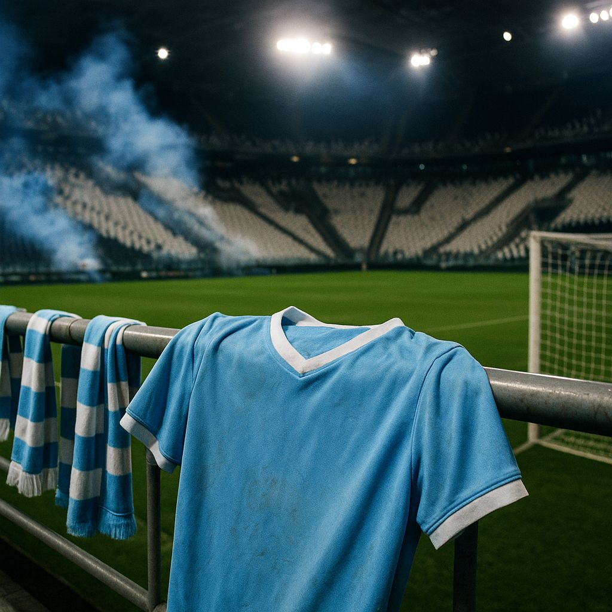
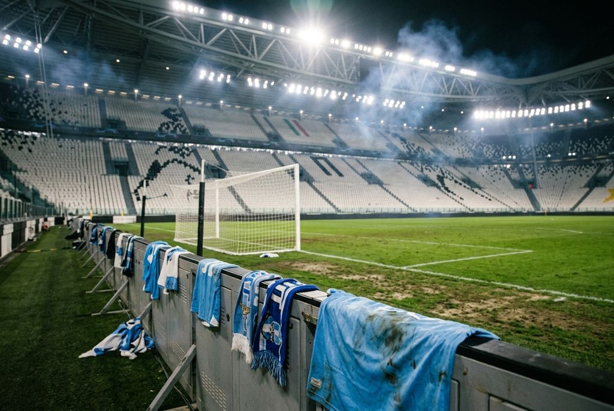
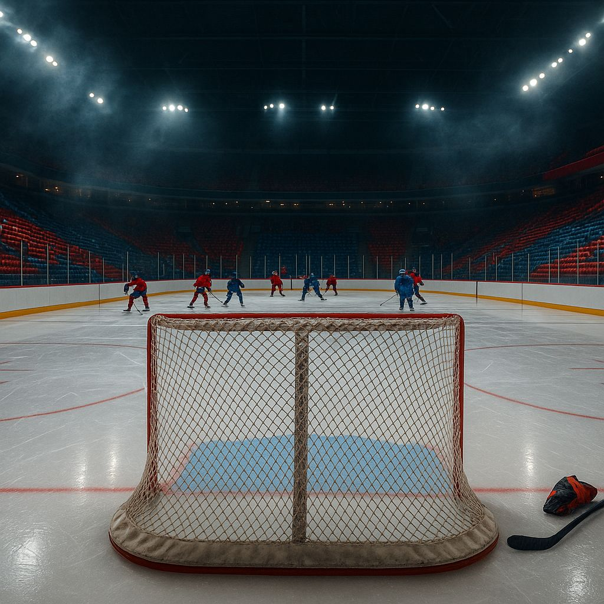
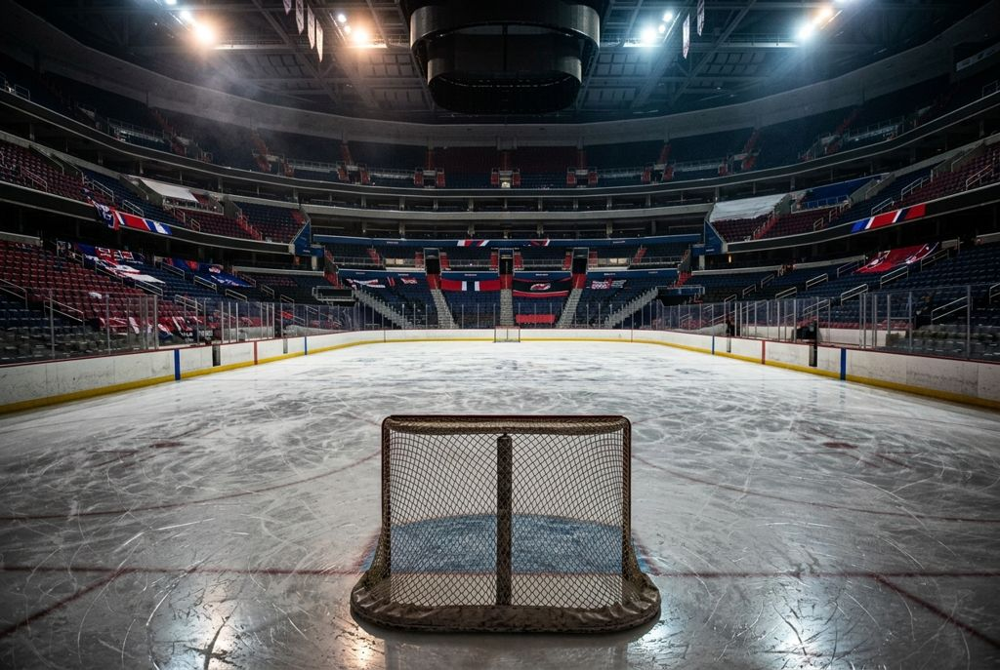
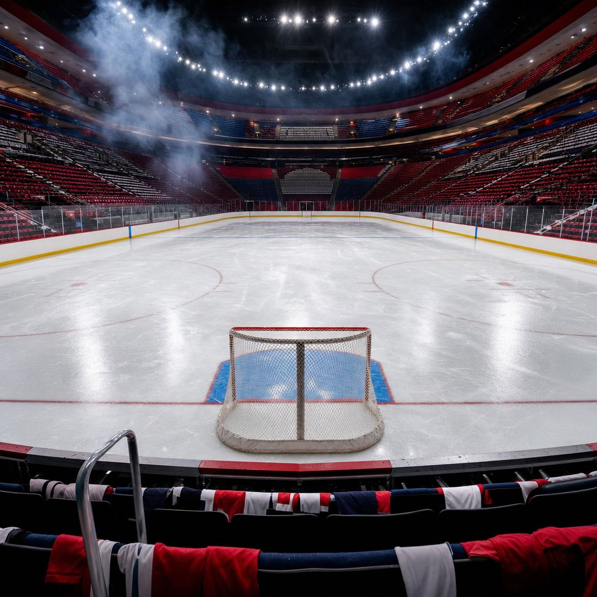
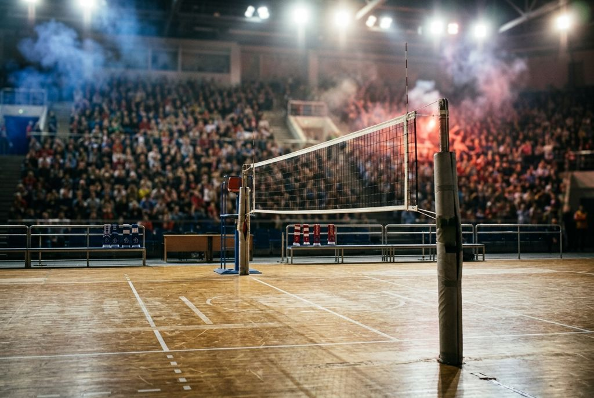
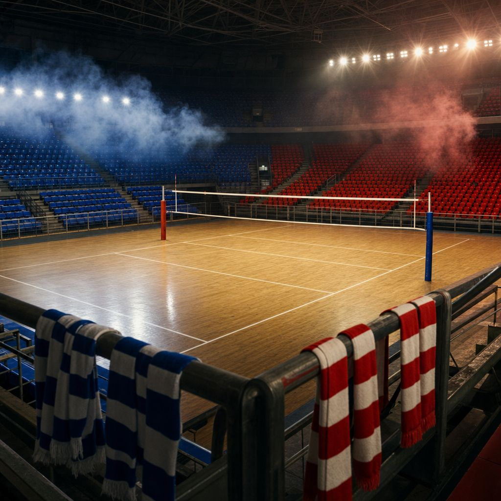
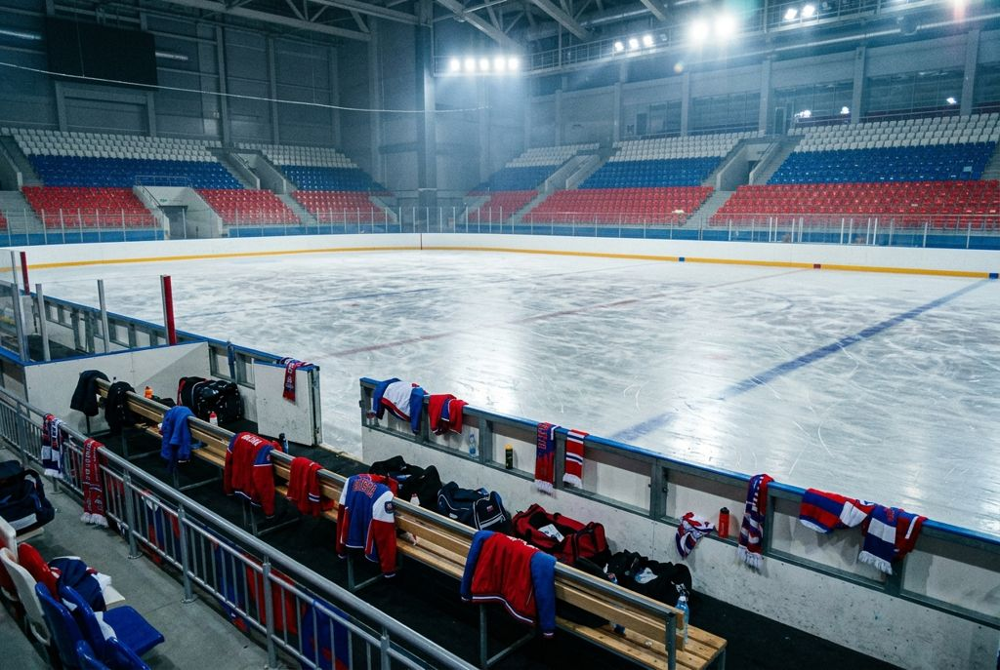
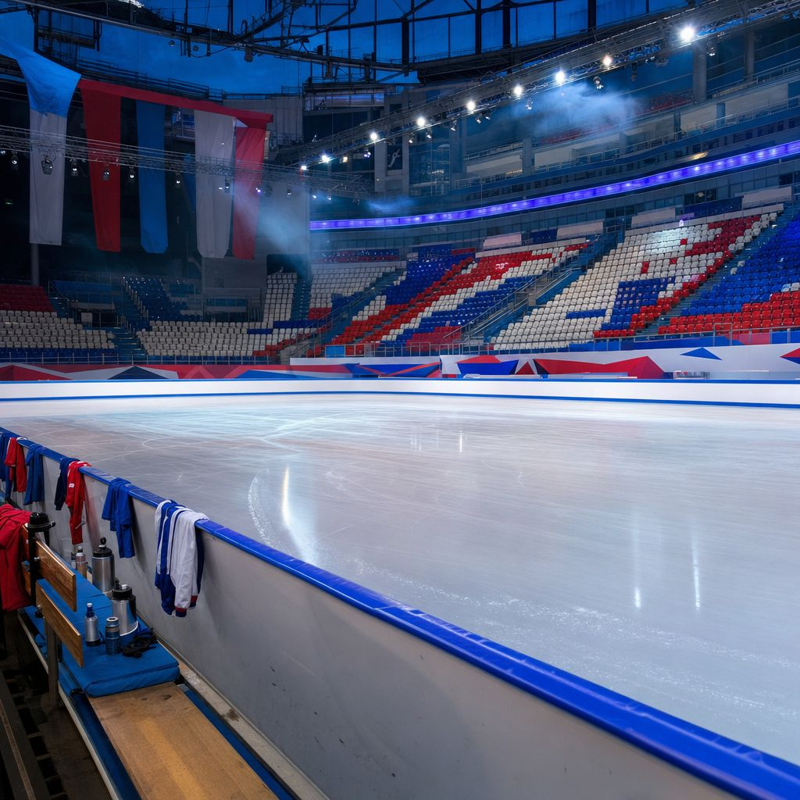

Картинки: три модели на одних и тех же новостях
Картинка в ленте обрезается до формата 3:2, как здесь. Цена — за одну картинку.
«Лацио» разгромил «Ювентус» в Турине со счётом 3:0

GPT-5 Image Mini — сейчас · ~1–2 ¢

Nano Banana 2.1 · ~4 ¢
«Вашингтон» обыграл «Нью-Джерси» благодаря голевой передаче Овечкина

GPT-5 Image Mini — сейчас · ~1–2 ¢
⚠ нарисовала игроков — так нельзя

Nano Banana 2.1 · ~4 ¢

GPT-5.4 Image 2 · ~4 ¢
«Динамо» Москва выиграло Кубок легенд по волейболу 2026 года
GPT-5 Image Mini — сейчас · ~1–2 ¢

Nano Banana 2.1 · ~4 ¢
⚠ зрители на трибунах — правило уже исправлено

GPT-5.4 Image 2 · ~4 ¢
Российские юниоры вышли в финал Гран-при ISU во всех дисциплинах
GPT-5 Image Mini — сейчас · ~1–2 ¢

Nano Banana 2.1 · ~4 ¢

GPT-5.4 Image 2 · ~4 ¢
⚠ флаги — так нельзя